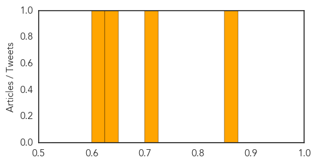

Hepatitis
30-Day Web Trend
2 alerts, 0 warnings

30-Day Twitter Trend
0 alerts, 0 warnings

Article Locations
Article Confidences

Top Articles:
- 0.854
- Prevention efforts, new drugs offer hope for an end to hepatitis
- 0.768
- Indiana has 'one of the worst' HIV outbreaks
- 0.582
- HIV & AIDS Information :: New EASL guidelines prioritise interferon-free hepatitis C treatment
- 0.575
- Pregnant Hong Kong women show no significant drop in hepatitis B prevalence rate despite vaccinations, study finds
- 0.563
- ‘1,000 kids die daily due to non-provision of vaccines’
Top Tweets:
-
No tweets found for Apr 28, 2015
Meningitis
30-Day Web Trend
2 alerts, 0 warnings

30-Day Twitter Trend
1 alerts, 0 warnings

Article Locations

Article Confidences
Top Articles:
Top Tweets:
-
No tweets found for Apr 28, 2015